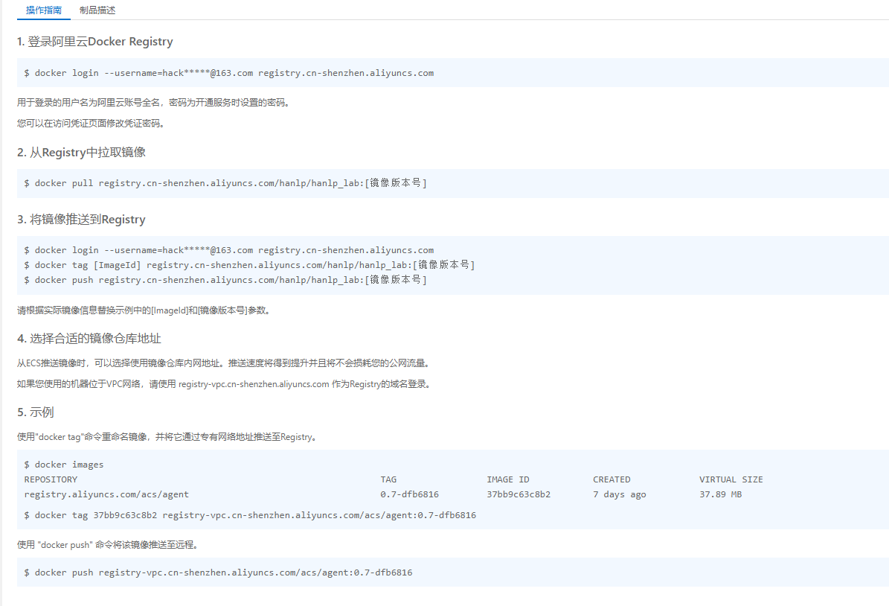
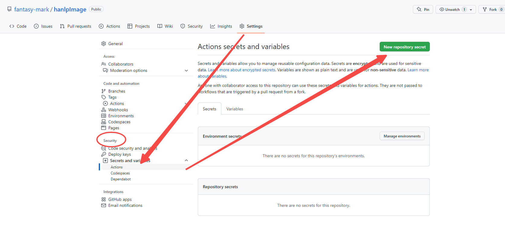
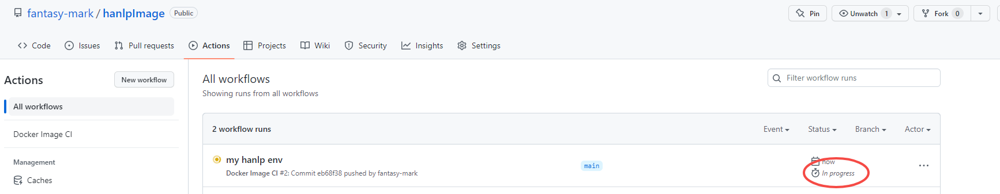

工具_docker
安装配置
-
配置代理 (Setting->Resources->Proxies) 如果无需代理访问外网则无需设置
- 共享目录 (Setting->Resources->File Sharing)
镜像
# 拉取官方镜像
docker login
docker pull hello-world
docker images
# 拉取官方最新的ubuntu镜像
docker pull ubuntu
# 删除镜像
docker rmi ImageID
免安裝下載鏡像
wget https://raw.githubusercontent.com/NotGlop/docker-drag/master/docker_pull.py
python .\docker_pull.py registry.cn-shenzhen.aliyuncs.com/auto_image/sqa_ai
镜像仓库操作
# 通过容器创建自己的镜像 - 这里登录的是阿里云的仓库
docker login --username="hackxxxxxx.com" --password="Dxxxx02b" registry.cn-shenzhen.aliyuncs.com
docker commit ContainId ImgName
docker tag hello-world remoteSpaceName/ImgName:VersionTag
docker push remoteSpaceName/ImgName:VersionTag
# 拉取自己仓库的镜像
docker pull remoteSpaceName/ImgName:VersionTag
导入镜像到其他机器
# 从阿里云上导入个人服务器的一次实践
# 导出 docker save -o TarName ImageID/Tag:Version
# 或 docker save ImageID/Tag:Version > TarName
docker save redis:alpine > redis.tar
docker save svn_calc-web:latest > svn_calc_web.tar
# 导入 docker -i/< IMAGE ID/Tag:Version
docker load < redis.tar
docker load < svn_calc_web.tar
# 如果以ImageID导出，则Tag和Version默认为<None>
docker image tag 10d0756f21af 10.xxx.xx.63:9004/svn-calc-web:1.0.0-Beta
# 执行 docker-compose.yml 脚本, 参照 ### docker-compose 添加app.py 和 docker-compose.yml
# 访问http://xxx.xxx.xx.xx:9004/ 正常响应
[root@xtrack-docker-dp svn_calc]# docker-compose up
Starting svn_calc_web_1 ... done
Starting svn_calc_redis_1 ... done
Attaching to svn_calc_redis_1, svn_calc_web_1
...
web_1 | * Serving Flask app 'app.py'
配置apt-get
# 更换国内阿里源
sed -i s@/archive.ubuntu.com/@/mirrors.aliyun.com/@g /etc/apt/sources.list
sed -i s@/security.ubuntu.com/@/mirrors.aliyun.com/@g /etc/apt/sources.list
apt-get clean
# 更新
apt-get update
容器
# 运行并终端登录-退出不保存修改记录
docker run -it ubuntu /bin/bash
# 运行并终端登录
docker exec -it ubuntu /bin/bash
# 退出容器终端并停止容器运行 ctrl+q+p 或者 exit
# 查看已经运行的容器
docker ps -a
# 进入已经运行的容器
docker attach ContainId
# 查看容器端口映射
docker port ContainId
# 查看日志输出
docker logs -f ContainId
# 打印后代容器日志
docker logs --tail=50 ContainId
# 查看容器内部进程
docker top ContainId
# 导出容器
docker export ContainId > ubuntu.tar
# 导入容器
cat docker/ubuntu.tar | docker import - mark/ubuntu:v1
# 通过url或者文件路径导入容器
docker import http://example.com/ubuntu.tar mark/ubuntu:v1
# 挂载宿主机已共享目录到容器/share节点上
docker -it run ubuntu /bin/bash -v D:\docker:/share
使用仓库hanlp镜像
docker run --name hanlp -d -p 8888:8888 registry.cn-shenzhen.aliyuncs.com/devan/hanlp-jupyterlab
# 显示日志
docker logs -f hanlp
进阶-自动构建
GitHub Actions
GItHub Actions是一个持续集成和持续交付的平台，能够让你自动化你的编译、测试和部署流程。
- 创建一个docker镜像仓库（使用阿里云）

- 设置
Repo Security

- 在github上创建流水线环境
:+1: push后会自动触发构建任务
.github/workflows/build.yml
name: Docker Image CI
on:
push:
branches: [ main ]
pull_request:
branches: [ main ]
jobs:
build:
runs-on: ubuntu-latest
steps:
- uses: actions/checkout@v2
- name: Build the Docker image
run: |
docker version
# 登录阿里云镜像仓库
docker login --username=${{ secrets.DOCKER_USERNAME }} --password=${{ secrets.DOCKER_PASSWORD }} registry.cn-shenzhen.aliyuncs.com
# 使用Dockerfile构建镜像
docker build . --file Dockerfile --tag registry.cn-shenzhen.aliyuncs.com/devan/hanlp-jupyterlab
# 推送镜像到镜像仓库 - 这里对应 https://cr.console.aliyun.com/cn-shenzhen/instance/repositories
docker push registry.cn-shenzhen.aliyuncs.com/hanlp/hanlp_lab
- 推送对应
Dockerfile来进行构建
FROM python:3.9.0
RUN pip --no-cache-dir install hanlp[full]
RUN pip install jupyterlab
WORKDIR /jupyter
EXPOSE 8888
CMD ["bash", "-c", "jupyter lab --notebook-dir=/jupyter --ip 0.0.0.0 --no-browser --allow-root"]
:+1:出现以下说明流水线已经自动跑起来了

docker-compose
Step 1: Define the application dependencies
- Create a directory for the project:
- Create a file called
app.pyin your project directory and paste the following code in:
import time
import redis
from flask import Flask
app = Flask(__name__)
# 通过与容器名相同的域名可访问对应容器(compose自动生成)
cache = redis.Redis(host='redis', port=6379)
def get_hit_count():
retries = 5
while True:
try:
return cache.incr('hits')
except redis.exceptions.ConnectionError as exc:
if retries == 0:
raise exc
retries -= 1
time.sleep(0.5)
@app.route('/')
def hello():
count = get_hit_count()
return 'Hello World! I have been seen {} times.\n'.format(count)
- Create another file called
requirements.txtin your project directory and paste the following code in:
Step 2: Create a Dockerfile
The Dockerfile is used to build a Docker image. The image contains all the dependencies the Python application requires, including Python itself.
In your project directory, create a file named Dockerfile and paste the following code in:
# syntax=docker/dockerfile:1
FROM python:3.7-alpine
WORKDIR /code
ENV FLASK_APP=app.py
ENV FLASK_RUN_HOST=0.0.0.0
RUN apk add --no-cache gcc musl-dev linux-headers
COPY requirements.txt requirements.txt
RUN pip install -r requirements.txt
EXPOSE 5000
COPY . .
CMD ["flask", "run"]
Step 3: Define services in a Compose file
Create a file called docker-compose.yml in your project directory and paste the following:
This Compose file defines two services: web and redis.
The web service uses an image that’s built from the Dockerfile in the current directory. It then binds the container and the host machine to the exposed port, 8000. This example service uses the default port for the Flask web server, 5000.
The redis service uses a public Redis image pulled from the Docker Hub registry.
Step 4: Build and run your app with Compose
- From your project directory, start up your application by running
docker compose up.
$ docker compose up
Creating network "composetest_default" with the default driver
Creating composetest_web_1 ...
Creating composetest_redis_1 ...
Creating composetest_web_1
Creating composetest_redis_1 ... done
Attaching to composetest_web_1, composetest_redis_1
web_1 | * Running on http://0.0.0.0:5000/ (Press CTRL+C to quit)
redis_1 | 1:C 17 Aug 22:11:10.480 # oO0OoO0OoO0Oo Redis is starting oO0OoO0OoO0Oo
redis_1 | 1:C 17 Aug 22:11:10.480 # Redis version=4.0.1, bits=64, commit=00000000, modified=0, pid=1, just started
redis_1 | 1:C 17 Aug 22:11:10.480 # Warning: no config file specified, using the default config. In order to specify a config file use redis-server /path/to/redis.conf
web_1 | * Restarting with stat
redis_1 | 1:M 17 Aug 22:11:10.483 * Running mode=standalone, port=6379.
redis_1 | 1:M 17 Aug 22:11:10.483 # WARNING: The TCP backlog setting of 511 cannot be enforced because /proc/sys/net/core/somaxconn is set to the lower value of 128.
web_1 | * Debugger is active!
redis_1 | 1:M 17 Aug 22:11:10.483 # Server initialized
redis_1 | 1:M 17 Aug 22:11:10.483 # WARNING you have Transparent Huge Pages (THP) support enabled in your kernel. This will create latency and memory usage issues with Redis. To fix this issue run the command 'echo never > /sys/kernel/mm/transparent_hugepage/enabled' as root, and add it to your /etc/rc.local in order to retain the setting after a reboot. Redis must be restarted after THP is disabled.
- Enter http://localhost:8000/ in a browser to see the application running.
If this doesn’t resolve, you can also try http://127.0.0.1:8000.
You should see a message in your browser saying:
Step 5: Edit the Compose file to add a bind mount
Edit docker-compose.yml in your project directory to add a bind mount for the web service:
version: "3.9"
services:
web:
build: .
ports:
- "8000:5000"
volumes:
- .:/code
environment:
FLASK_DEBUG: "true"
redis:
image: "redis:alpine"
The new volumes key mounts the project directory (current directory) on the host to /code inside the container, allowing you to modify the code on the fly, without having to rebuild the image. The environment key sets the FLASK_DEBUG environment variable, which tells flask run to run in development mode and reload the code on change. This mode should only be used in development.
docker-compose补充
# 如果 DokerFile 变动 需要重新构建 image
docker compose build
# 后台运行容器
docker compose up -d
# 在运行的镜像(需要安装了bash)中执行命令
docker compose exec Server_Name /bin/bash
# 重要！!! 不要使用 docker stop&rm ContainId 重启, 否则数据会冲掉
# pip install ctop
ctop # 选择对应容器 restart 即可, 注意检查下手动启动的服务
较复杂的docker-compose
# docker-compose.yml
version: "3.3"
services:
web:
image: "xxx.xxx.xxx.xxx:9004/calc-web:1.0.0"
# build:
# context: .
# dockerfile: Dockerfile_web
ports:
- "9004:5000"
volumes:
- ./code:/code # 主机目录:容器内目录
environment:
FLASK_DEBUG: "false"
redis:
image: "redis:alpine"
svn:
image: "xxx.xxx.xxx.xxx:9004/calc-svn:1.0.0"
# build:
# context: .
# dockerfile: Dockerfile_svn
volumes:
- ./code:/code # 主机目录:容器内目录
# Dockerfile_web
FROM python:3.7-alpine
WORKDIR /code
ENV FLASK_APP=app.py
ENV FLASK_RUN_HOST=0.0.0.0
RUN apk add --no-cache gcc musl-dev linux-headers
COPY requirements.txt requirements.txt
RUN pip install -r requirements.txt
EXPOSE 5000
# COPY . .
CMD ["flask", "run"]
# Dockerfile_svn
FROM ubuntu:20.04
WORKDIR /code
RUN apt-get update && apt-get install cron -y && apt-get install python3 -y && apt-get install subversion -y
# Copy daily-cron file to the cron.d directory
COPY daily-cron /etc/cron.d/daily-cron
# Give execution rights on the cron job
RUN chmod 0644 /etc/cron.d/daily-cron
# Apply cron job
RUN crontab /etc/cron.d/daily-cron
# Create the log file to be able to run tail
RUN touch /var/log/cron.log
# Run the command on container startup, 防止Exited(2)
CMD service cron start && tail -f /var/log/cron.log
常用docker仓库
python/jupyterlab 镜像
FROM jupyter:latest
WORKDIR /jupyter
EXPOSE 8888
CMD ["bash", "-c", "jupyter lab --notebook-dir=/jupyter --ip 0.0.0.0 --no-browser --allow-root"]
docker build . --file Dockerfile --tag image-python/python-3.9
docker run --rm -p 8888:8888 jupyter/base-notebook:latest
Or
github自动构建 - 这个包包含了java环境，太大不建议使用